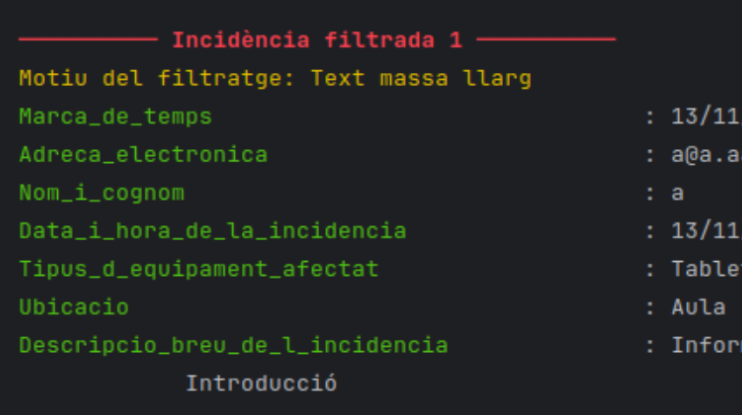

Converts raw incident data into clean, validated, structured information.

Detects repeated failed logins and flags suspicious IP activity.
Network Intrusion Detection System
Detects suspicious network traffic using rule‑based and anomaly‑based analysis.
Phishing Email Analyzer
Automatically identifies phishing attempts using header inspection and NLP.
Password Strength Auditor
Evaluates password strength and detects weak or reused credentials.
Firewall Rule Optimization Tool
Analyzes firewall rules to remove redundancies and improve security.
Vulnerability Scanner Prototype
Scans systems for outdated software, misconfigurations, and known CVEs.
Secure File Encryption Utility
Encrypts files using AES‑256 with a simple and intuitive interface.
Malware Behavior Sandbox
Executes malware safely to observe behavior and extract indicators.
Wi‑Fi Penetration Testing Toolkit
Performs Wi‑Fi audits including handshake capture and network mapping.